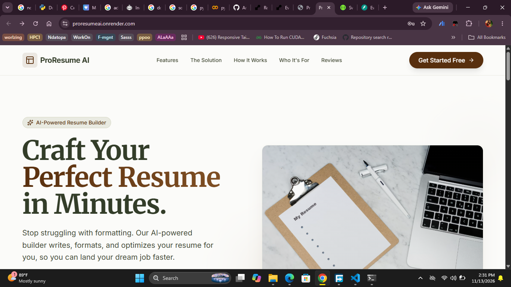
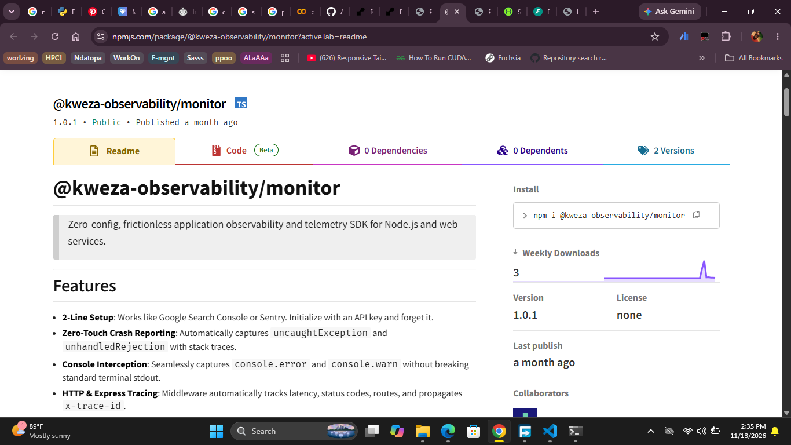
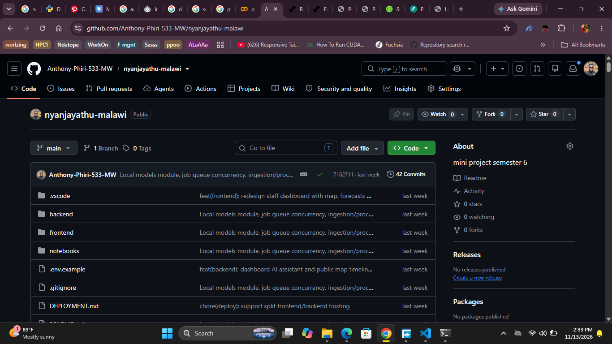
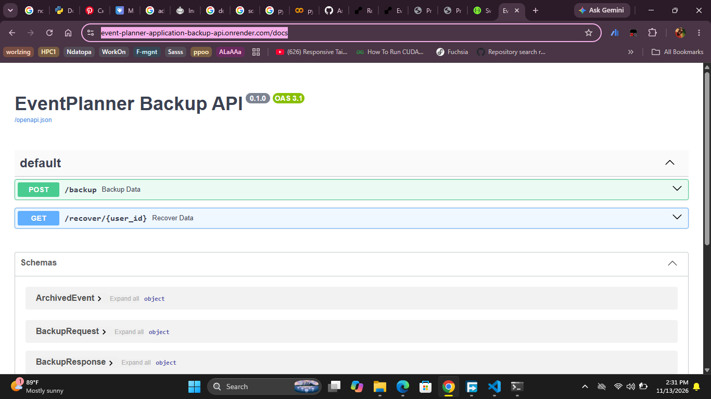
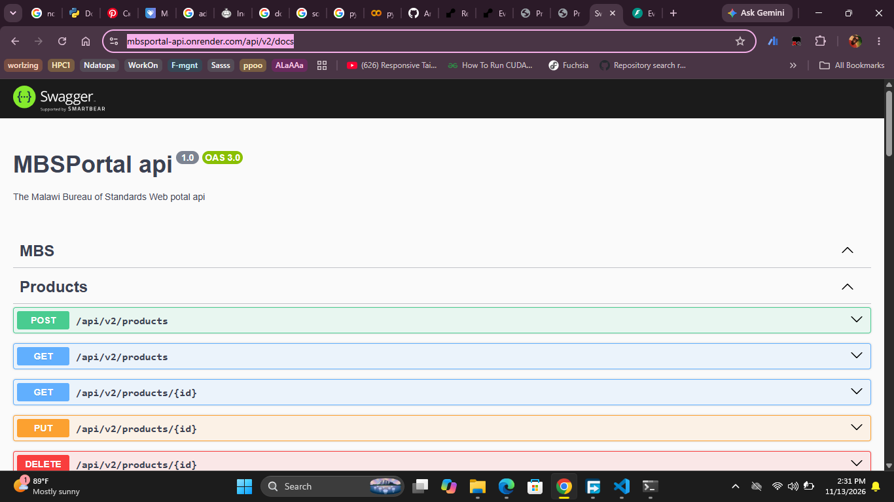

P / 01Selected work · 2023—26
Selected projects
Academic and personal projects covering web applications, APIs, machine learning, and desktop software. Repository and live links are included where available.
These projects cover web applications, APIs, machine learning, and desktop software.
Browse GitHub01 / Selected work
Selected work

P / 05
A / 01A / 02POINT TO
POINT
POINT

A / 04
A / 0602 / Personal & professional
Additional projects
Malawi Health Information
Web app providing Malawi-focused health information and resources.
Book Mockups
Browser tool for generating book mockup images.
Small Business Items Tracker API
API for item tracking in small-business applications.
Kweza Digital Solutions
Company website and service overview.
DMI CS Club Voting API
API for managing club elections.
Fuel Station Management
Web app for fuel station operations.
Globe Electronics
E-commerce-style website for an electronics store.
Event Planner App
Python and Qt5 desktop app for organising events.
Library Management System
C program for managing library records and loans.
Repository links are included where they were provided. Other projects link to their available live site or package.